小红书-Helmsman：all-flash 服务器上的聚类式 ANNS 工程回归
这篇论文的全名是 The Clustering Strikes Back: Building Cost-Effective and High-Performance ANNS at Scale with Helmsman，入口为 arXiv:2606.13145。PDF 元信息显示作者为 Yuchen Huang、Baiteng Ma、Yiping Sun、Yang Shi、Xiao Chen、Xiaocheng Zhong、Zhiyong Wang、Yao Hu、Erci Xu、Chuliang Weng；机构覆盖华东师范大学、上海交通大学和小红书 Inc，其中 Yuchen Huang 与 Baiteng Ma 在小红书 Engine Architecture Department 实习期间完成该工作。论文关注的是小红书/RedNote 在搜索、推荐、广告、内容安全和 RAG 中大规模使用的近似最近邻搜索。它提出 Helmsman：一个运行在 all-flash servers 上的 clustering-based ANNS 系统，通过 userspace storage stack、leveling-learned search pruning 和 GPU/弹性 CPU 构建流水线，把原来依赖 PB 级 DRAM 的 HNSW 类服务迁移到 SSD 主存储路径上。arXiv 摘要页未把代码链接列在元信息栏，但论文正文第 1 节声明 proof-of-concept 版本和拟合真实分布的数据集位于 https://github.com/Red-EAD/helmsman；本笔记只把它作为论文正文声明的代码状态记录。
1. 背景和问题
小红书这篇系统论文不是在讨论一个普通向量数据库 benchmark，而是在讲一个真实平台如何给搜索、推荐和广告的召回层降成本。RedNote 到 2025 年有超过 3 亿月活用户和 8000 万创作者，内容形态包括图片、短视频、评论和文本 note。搜索、推荐、广告、内容安全、RAG 等链路都要把 query、用户、内容、商品或知识片段映射到 embedding 空间，再通过 ANNS 找候选。论文给出的规模是“hundreds of billions of embedding vectors”和“millions of QPS”，并且实时服务通常只有 5-10 ms 量级平均延迟 SLA。这意味着 ANNS 不是后处理工具，而是排序链路最前面的候选生成基础设施；一旦 ANNS 延迟抖动，后面的精排模型再强也拿不到足够候选。
小红书原来的主力方案是 in-DRAM graph-based ANNS，也就是 HNSW 一类图索引。它的优点很直接：邻接表和原始向量都在 DRAM 中，HNSW 从上层入口点逐层贪心下降到底层，再在候选池上做 best-first search，关键路径主要是内存访问，所以可以稳定满足低延迟和高 QPS。当单个 shard 放不下全部索引时，系统把数据分到多个内存 shard 并行查询，前端再 merge partial results 得到 global top-k。这种设计是工业界多年验证过的“用内存换尾延迟”路线。问题也同样直接：用户和内容增长把 ANNS 索引推到 PB 级 DRAM，论文说仅 search、recommendation、advertising 的 in-DRAM HNSW 索引就已经在实践中消耗 PB 级 DRAM，单个服务也可能达到数百 TB。DRAM 不是只贵在采购，CPU、机柜、电力和维护都会被内存容量绑定，CapEx 和 OpEx 同时放大。
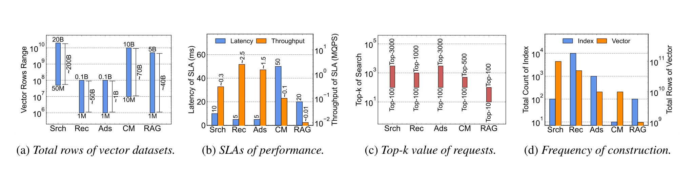
Figure 1 把 RedNote 的 ANNS 负载按四个维度摊开：数据规模、性能 SLA、请求 top-k 和构建频率。Search 覆盖全量 UGC 与 web-wide 数据，向量量级可到数十 billion，典型 peak traffic 约 300K QPS，平均延迟 SLA 约 10 ms，top-k 范围可达 100-3000，并且希望每日重建全量索引。Recommendation 的单索引规模通常是 1M 到 100M，但路径更多、在线吞吐可到约 2.5M QPS，top-k 可到 1000，embedding 模型按分钟到小时聚合反馈更新，因此累计每天可触发上万次索引重建。Advertising 总量约 1B 向量，同样有毫秒级 SLA 和百万级 QPS，且因为标量过滤和计费状态限制，top-k 也可能到 3000。Content moderation 和 RAG 相对宽松，但也有 10B allow-list、百万到数十亿知识库等场景。这个图说明 Helmsman 要面对的不是单一 search workload，而是一组规模、实时性、top-k、更新频率互相冲突的服务集合。
把这四类服务放在一起看，还能看到一个对推荐系统很关键的差异：search 的向量集合最大，用户主动 query 给出较强意图，因此主要矛盾是全量 corpus 的容量和大 top-k；recommendation 的单索引规模较小，但路径多、流量大、过滤条件复杂，主要矛盾是高 QPS 和候选不足风险；advertising 的向量量级介于两者之间，但标量过滤和预算约束会让召回 top-k 被迫放大；CM/RAG 的 SLA 更宽松，反而给混合 DRAM-SSD 图索引留下空间。Helmsman 之所以要做成统一 ANN layer，是因为这些业务共享一套硬件和构建能力，但它们对参数、重建频率和服务等级的要求并不一致。一个只针对 search 最优的系统，可能无法承接推荐的高并发和分钟级更新；一个只针对 RAG 的低成本方案，又可能在广告的毫秒级 SLA 下崩溃。
这也解释了论文为什么一直强调 top-k。很多学术 ANNS 评测只看 top-10 或 top-100，而小红书的 search、recommendation、advertising 都会因为后续 reranking、post-filtering、业务多路召回和候选池扩展，把 top-k 推到 1000 甚至 3000。top-k 变大后，系统压力并不是线性增加那么简单：graph search 的候选队列、访问 hop 数、SSD page reads 都会变长；clustering search 的 nprobe、posting list 读取量和距离计算也会增加。Helmsman 的所有设计都围绕“大 top-k 下如何保持批量 I/O 和可控 recall”展开，而不是只为 top-10 低延迟做 micro-optimization。
为什么不能把 DRAM 换成现成的 DRAM-SSD graph ANNS？论文先分析了 DiskANN、Starling、PipeANN 这类混合图索引。它们确实能把部分图或向量放到 SSD 上，减少内存占用，小红书也已经把 DiskANN 类方案用于内容安全、RAG 等 SLA 更宽松的任务。但 search、recommendation、advertising 的实时召回不同：top-k 大，候选链路长，HNSW/DiskANN 式图遍历天然是依赖链 I/O。一次 search 需要先读当前节点邻居，计算后才知道下一步要读谁；SSD 带宽即便很高，也会被这种强串行访问变成延迟瓶颈。PipeANN 通过 intra-query parallelism 缓解一部分，但论文在 SIFT100M、12 块 PCIe Gen5 SSD、90% recall、top-k 10 到 3000 的测试中发现，它在高 top-k 下仍不能满足在线 SLA，吞吐也比 HNSW 低一个数量级以上。
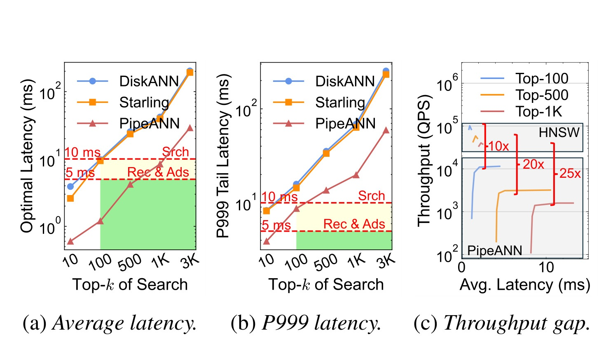
Figure 4 是本文转向 clustering-based ANNS 的反证。左边两个子图分别看平均延迟和 P999 tail latency，绿色区域标出 search 的 10 ms 与 recommendation/advertising 的 5 ms SLA；DiskANN 和 Starling 基本无法进入 SLA 区，PipeANN 虽然最低，但在大 top-k 下仍接近或突破边界。右边 throughput gap 子图显示，在满足延迟 SLA 的前提下，PipeANN 峰值吞吐仍比 HNSW 低 10-25 倍。这个图的重要性在于，它排除了一个看似更自然的降成本路径：既然生产已经用 HNSW，是否只需把图索引搬到 SSD？论文的回答是否定的，因为图遍历的访问模式和 SSD 的高带宽特性不匹配。SSD 适合批量、并行、较顺序的读；图搜索需要反复依赖上一跳结果，I/O depth 不容易拉满。
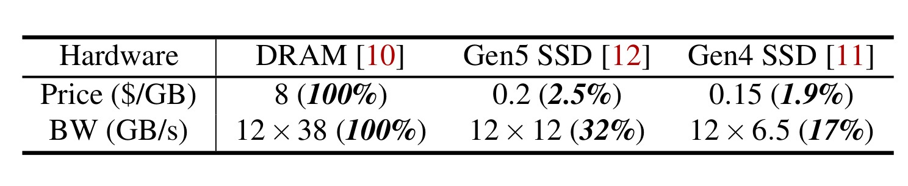
Table 1 给出硬件经济性背景。以 2025 年 12 月价格估算，DRAM 约 8 美元/GB，Gen5 SSD 约 0.2 美元/GB，Gen4 SSD 约 0.15 美元/GB；12 通道 DDR5 带宽约 12x38 GB/s，12 块 Gen5 SSD 约 12x12 GB/s，Gen4 SSD 约 12x6.5 GB/s。换句话说，Gen5 SSD 的阵列带宽已经达到 DRAM 的约 32%，单 GB 价格却只有 DRAM 的约 2.5%。这就是 Helmsman 的硬件假设：如果能把 ANNS 访问改造成高并发、批量、无依赖的 SSD 读，并把软件栈开销压下去，那么 all-flash server 有机会以小得多的内存成本接近 in-memory 服务能力。注意这里不是说 SSD 和 DRAM 等价，Table 1 也清楚显示带宽仍有约 3 倍差距；Helmsman 的任务是让系统瓶颈从“内存容量必须存全量图”转成“少量 DRAM 存 centroid/metadata，大量 SSD 提供 cluster list 吞吐”。
论文接着重新审视 clustering-based ANNS，代表系统是 SPANN。聚类式索引先把向量分到很多 cluster，DRAM 中保留 centroid 或 centroid graph，查询时找到最近的一批 centroids，再把对应 cluster posting lists 从 SSD 批量读入并做距离计算。相对图搜索，它的 I/O 模式更像“先决定一批 cluster，再并行读很多固定大小列表”，依赖链少，更容易利用多块 NVMe SSD 的带宽。论文的 Figure 6 显示 SPANN 在高带宽 SSD 上已经能接近延迟 SLA，并且随着 SSD 数量增加吞吐近似线性扩展。但 SPANN 不能直接上线：Figure 7 给出了它的四个缺口。
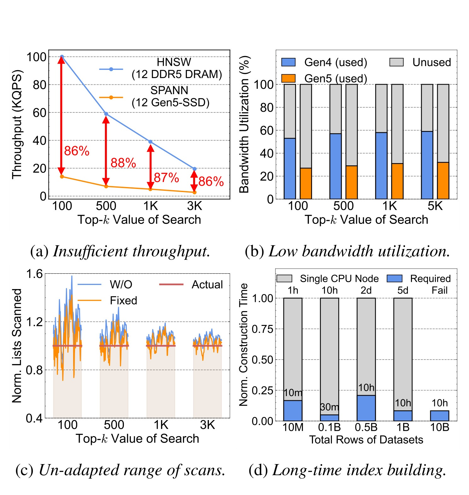
Figure 7a 显示，在在线服务 SLA 下，即使用 96-core node 和 12 块 PCIe 5.0 SSD，SPANN 相比 in-DRAM HNSW 仍有约 86-88% 的吞吐缺口；Figure 7b 显示它只用了约 26-59% 的 SSD 可用带宽，说明问题不只是硬件不够，而是 I/O stack 和提交方式没有把阵列打满。Figure 7c 解释固定 pruning 的问题：SPANN 用经验 \epsilon 控制扫描 cluster 范围，许多 query 会多扫无用 cluster，另一些 query 又可能扫少导致 recall variance。Figure 7d 则暴露构建短板：单节点 CPU-only 构建在从千万到百亿向量时会从几小时膨胀到多天，和推荐/广告分钟到小时级 embedding 更新节奏冲突。到这里，Helmsman 的问题定义就很清楚了：不是“SSD 便宜所以搬过去”，而是要同时解决在线 I/O 利用率、query-adaptive 扫描范围和离线重建时间三件事。
2. 方法
2.1 从图式 ANNS 回到聚类式 ANNS 的系统假设
Helmsman 的核心判断是：在 RedNote 这种大 top-k、多业务、多索引重建的负载下，graph-based ANNS 的“少 I/O”优势会被串行依赖抵消，而 clustering-based ANNS 的“多 I/O”劣势可以被现代 SSD 阵列的带宽吞掉。图式方法的每次访问都需要依赖当前候选节点，适合低 top-k、低 I/O 数、强缓存命中的场景；但当 top-k 到 1000 或 3000，候选队列和 search hops 都会显著变长，SSD 页面访问也随之增加。聚类式方法虽然会一次加载更多候选向量，但它在定位最近 centroids 后可以并行发起 cluster-list reads，I/O 之间没有图遍历那种逐跳依赖。Helmsman 的设计就是围绕这个假设，把在线路径改造成固定大小、批量提交、跨 NVMe 分散的读，再把扫描范围从固定经验规则变成 query-specific 预测。
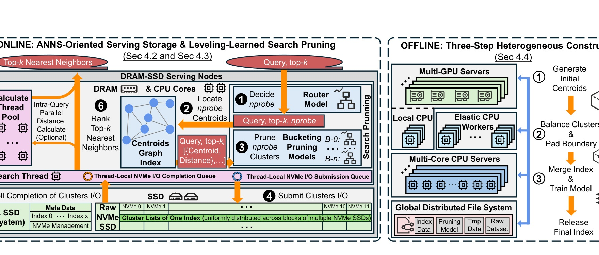
Figure 8 是整篇论文的中心图。左半部分是 online ANNS-oriented serving storage 与 leveling-learned search pruning，右半部分是 offline three-step heterogeneous construction。在线服务节点是 all-flash server，配置包括 12x2 TB PCIe Gen5 NVMe SSD、12x96 GB DDR5 DRAM 和 96-core CPU。DRAM 中保留 centroid graph index、router/pruning model weights、metadata；SSD 中存放按 block 分布的 cluster lists。查询进入后，router model 先根据 query vector 和 top-k 决定 coarse nprobe level；centroids graph 找到对应范围内最近的 centroids；pruning model 再从这些候选 cluster 中删除冗余扫描；之后 search threads 向 thread-local NVMe submission queue 批量提交 I/O，轮询 completion queue，加载向量后由本地线程或 calculate thread pool 做距离计算和 top-k 排序。右半部分则说明构建链路：GPU 生成初始 centroids，local CPU 或 elastic CPU workers 做 balance clusters 和 boundary padding，多核服务器 merge index 并训练 pruning model，最终发布 index data。
这个架构图里的设计选择有一个共同目标：把在线 critical path 上所有不可控的延迟源移走。第一，LLSP 在发 I/O 前就决定扫描范围，不依赖中间搜索结果，因此不会把 cluster reads 串行化。第二，cluster lists 在 raw NVMe 上按 fixed-size block 放置，一个 cluster list 尽量对应单个 I/O command，避免文件系统、device mapper、跨设备边界带来的额外拆分。第三，元数据、模型和 centroid index 都小到可以常驻 DRAM，真正走 SSD 的只有 cluster-list reads。第四，离线构建输出的最终索引已经包含 pruning model 和布局元数据，在线节点不需要在请求中做复杂构建或动态整理。Helmsman 不是把 SPANN 简单换个硬件，而是把存储路径、剪枝策略和构建流水线一起做成生产系统。
在实现层面，在线一次 query 可以看成一条严格的流水线。请求到达后，系统首先读取已经在 DRAM 中的索引版本元数据，确认当前 index 的 centroid graph、cluster map、LLSP model 和 raw-block allocation table；随后 router 用 query/top-k 给出 level，centroid graph 在内存中返回候选 centroids；pruning model 再把候选范围变成最终 cluster id 列表；接着 storage layer 把这些 cluster id 映射成 SSD id 与 LBA ranges，按设备拆分成 batch commands；completion 返回后，distance calculation 对加载向量与 query 做 L2 计算，最终 heap/ranking 输出 top-k。这个流程里只有 cluster list payload 走外部 SSD，其他控制状态都留在 DRAM 和 CPU cache 附近。这样的分层能把不确定性限制在 SSD read 和 distance calculation 两段，便于分别用带宽利用率、队列深度、计算线程利用率和 tail latency 做监控。
这个 pipeline 也解释了 Helmsman 为什么强调 intra-query parallel distance calculate 是 optional。对于低维 64D 或 128D 的 RedSrch/RedRec/RedAds，瓶颈可能在 I/O path 和 memory bandwidth；对于 1024D 的 RedRAG，加载同样数量的向量后，距离计算和内存 reread 成本明显更高。系统需要根据维度和 top-k 决定是否把 distance calculation 分发到 calculate thread pool，而不是始终把所有计算塞在 search thread 里。否则 I/O 优化带来的 completion 会堆积在内存缓冲区，最终被 CPU 计算吞吐限制。论文的 Figure 18 在 RedRAG 上展示 Gen5 SSD 升级收益更高，但第 6 节也提醒 memory bandwidth 会成为新瓶颈，说明计算和内存路径必须和 I/O 一起调优。
从数学角度看，论文显式写出的编号公式主要是 SPANN 的固定 pruning 规则，也就是 Helmsman 要替代的 baseline。给定 query 向量 q，centroids 按距离排序为 \(c_{i1},c_{i2},\ldots,c_{iK}\)，SPANN 用经验阈值 \(\epsilon\) 决定是否扫描 cluster \(X_{ij}\)：
符号解释：q 是查询向量；\(c_{ij}\) 是按距离排序后的第 j 个 centroid；\(X_{ij}\) 是该 centroid 对应的 cluster posting list；\(Dist(\cdot,\cdot)\) 是 L2 距离；\(c_{i1}\) 是最近 centroid；\(\epsilon\) 是人工选择的宽松系数。这个公式的直觉是，只要某个 cluster centroid 离 query 不比最近 centroid 远太多，就把它纳入扫描。它简单、无监督、便于实现，但缺陷也明显：同一个 \(\epsilon\) 同时服务不同 top-k、不同业务、不同局部分布的 query，很容易对简单 query 多扫、对困难 query 少扫。Figure 7c 中 scan range overshoot/undershoot 的现象正来自这里。
Helmsman 的方法章需要读成三段：第一段是 storage stack，把 batch fixed-size reads 真正送到 NVMe 阵列；第二段是 LLSP，把 nprobe 从固定阈值变成 query/top-k/centroid-distance 条件下的预测；第三段是 construction，把 CPU-only hierarchical k-means、boundary duplication 和 centroid graph building 改成 GPU + elastic CPU + multi-core merge 的流水线。这三段分别对应 Figure 7 的三个短板：带宽利用不足、扫描范围不适应、构建时间过长。
2.2 ANNS-oriented userspace storage stack
传统 SPANN 实现依赖 Linux I/O software stack。论文把路径拆成 application-kernel switching、file system、block layer、device mapper for RAID、NVMe driver、physical device 等环节。对于普通文件服务，这些层提供权限、缓存、抽象和通用性；对于 Helmsman 的 online cluster-list reads，它们反而是可预测工作负载上的固定税。聚类式搜索的 I/O 有两个特点：一是单 query 可能生成大量 batched reads，例如 top-3000 可能加载上千个 cluster lists；二是每个 cluster 被 padding 到固定大小，例如 SIFT 上 SPANN 用约 12 KB per cluster。也就是说，Helmsman 不是在处理任意随机文件读，而是在处理大量等长、可预分配、可批量提交的 block reads。
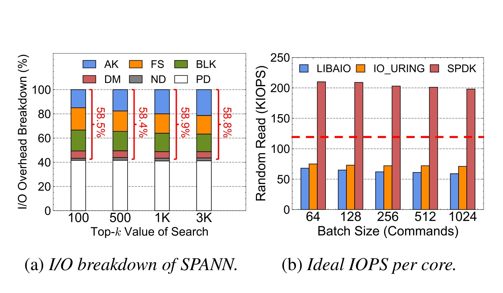
Figure 9a 拆解 SPANN I/O breakdown，可以看到传统栈中 libaio 路径的软件开销占比很高，论文报告 up to 58% of the total，甚至超过访问 physical device 本身。Figure 9b 则在 fixed-size batched read workload 上比较 libaio、io_uring 和 SPDK 的 ideal IOPS per core。io_uring 因为减少系统调用有一定改善，但仍不能满足每 search thread 约 120-170 KIOPS 的需求；SPDK 通过 userspace driver 完全绕过 kernel stack，才能接近 Helmsman 需要的 IOPS。这里的要点不是“SPDK 更快”这么简单，而是 ANNS 负载的 I/O command 很多、单次很小、延迟预算只有 6-8 ms 可用于 I/O，任何 per-command 系统栈开销都会被放大。Helmsman 选择 SPDK，是因为它需要在硬件队列粒度控制 submission/completion，而不是把 cluster list 当普通文件读。
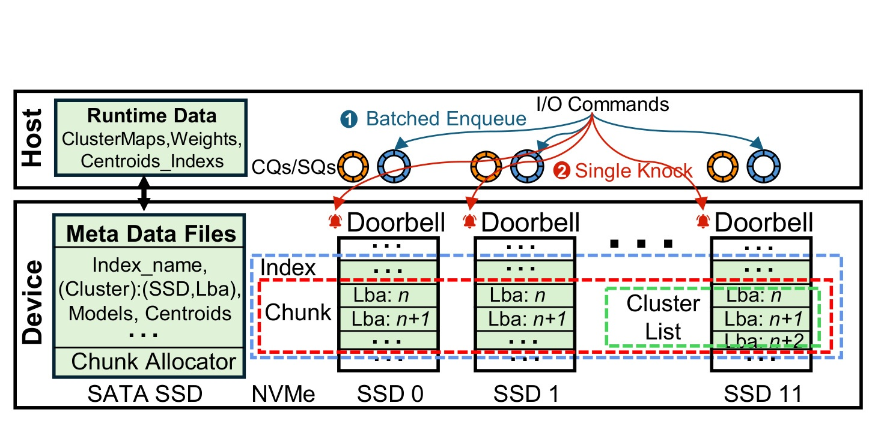
Figure 10 展示 Helmsman 的存储布局。Host 侧有 runtime data，包括 cluster maps、weights、centroids index；device 侧分成普通 SATA SSD 上的 metadata files 和多块 NVMe 上的 cluster lists raw blocks。Metadata 包括 index name、cluster 到 physical location 的映射、pruning models、centroids，它们小且运行时可常驻内存，所以用普通文件管理即可。真正吞吐敏感的是 cluster lists，Helmsman 把它们直接放在 NVMe SSD 的 logical block ranges 中，并保证一个 cluster list 占据单个 SSD 上连续 block，例如图中 SSD 11 的 LBA n 到 n+2。这样读一个 cluster 只需要一个 NVMe command，不会因为跨文件块、跨设备边界或 RAID mapper 造成多次 I/O。
I/O control 也随之改变。Helmsman 不再对每个 cluster read 走系统调用，而是把多个 I/O command 批量入队到 host-side NVMe queues，然后每个 NVMe device 每批只敲一次 doorbell。这个“single knock”看似底层，但对 microsecond 级路径很关键：如果每个 command 都要一次 PCIe doorbell round trip，top-k 大时 CPU overhead 会吃掉 SLA。Completion 侧也由 search thread 轮询 hardware completion queue，避免被通用内核调度唤醒。再加上 fixed-size cluster property，系统可以预分配 chunk-based free-list allocator，例如 64 MB per chunk，按 chunk 粒度部署和删除索引，减少碎片和文件系统 allocator 复杂度。
这一节可以把 Helmsman 理解成“为 ANNS 定制的轻量 block storage engine”。它没有追求通用文件语义，而是把聚类式索引的限制反过来变成优化条件：cluster size 固定，所以可以 cluster-aligned allocation；读路径单一，所以可以 raw NVMe；元数据小，所以可以文件化并常驻内存；请求模式批量，所以可以 batch enqueue 和 single doorbell。代价是系统复杂度上升，内核文件系统原本提供的安全性、设备抽象和运维便利性要自己补回来。论文没有把这些工程开销展开到代码级，但从 Figure 10 可以看出，Helmsman 的低成本不是纯算法收益，而是对存储栈所有通用层的选择性删除。
从读路径看，Helmsman 每次请求的关键状态可以分成三类。第一类是 per-index static state，包括 cluster 到 SSD/LBA 的映射、centroid graph、模型权重和 chunk allocator 元数据；这些状态随索引版本发布，运行时应稳定在内存中。第二类是 per-query transient state，包括 query vector、top-k、router 选出的 level、centroids graph 返回的候选 centroid 列表、pruning model 给出的最终 nprobe，以及需要提交的 NVMe command batch。第三类是 per-thread execution state，包括 submission queue、completion queue、临时候选向量缓冲、距离计算结果和 top-k heap。把这些状态拆开后，Helmsman 可以让热路径尽量 thread-local，减少跨线程同步；让小而共享的元数据只读化，减少锁竞争；让 SSD command 按设备分发，减少单设备队列拥塞。
这个设计对推荐服务尤其重要。推荐召回通常不是单一路径，而是多个召回通道并行，每个通道可能有不同 embedding、不同候选过滤和不同 top-k。单机上如果同时服务多个 index，普通文件系统的 page cache、block scheduler 和 RAID/device mapper 可能把不同 index 的读混在一起，使 tail latency 更难控制。Helmsman 的 raw NVMe layout 则让每个 index 的 cluster list 物理位置和读命令更可预测：metadata 告诉系统 cluster 在哪个 SSD、哪个 LBA，search thread 可以直接构造 command。它牺牲了通用文件系统的透明性，但换来 ANNS serving 最需要的确定性和可观测性。
需要注意的是，SPDK 并不会自动让系统更快。只有当上层能够持续产生足够大的 I/O depth，且读请求已经被整理成固定大小、设备可并行的 block ranges，SPDK 的优势才会显现。如果聚类质量很差，导致每次 query 要读大量散乱小块；如果 nprobe 过大，SSD 带宽被无效 cluster 吃掉；如果 distance calculation 线程跟不上，I/O completion 后数据堆在内存里，吞吐仍然上不去。所以 storage stack 和 LLSP 是互相依赖的：前者提供高带宽的可能，后者决定这份带宽是否用于有效候选。
2.3 Leveling-learned Search Pruning
聚类式 ANNS 的第二个核心参数是 nprobe，也就是要加载多少 cluster。nprobe 太大，I/O 和距离计算浪费，吞吐下降；nprobe 太小，候选覆盖不足，recall 下降。SPANN 的固定距离阈值把这个问题交给 \(\epsilon\)，但 RedNote 的真实负载 top-k 从 10 到 3000，query 难度和局部分布变化很大，固定规则很难同时满足所有服务。已有的 Quake、Auncel、LAET 等 early termination 方法看似适合动态停止，但论文认为它们不适合 Helmsman：这些方法常依赖扫描中间结果，例如扫描一部分 cluster 后看当前第 1/第 10 邻居距离，再决定是否继续。这个 probe-compute-decide loop 会破坏 SSD 友好的批量读，把 I/O 重新串行化。
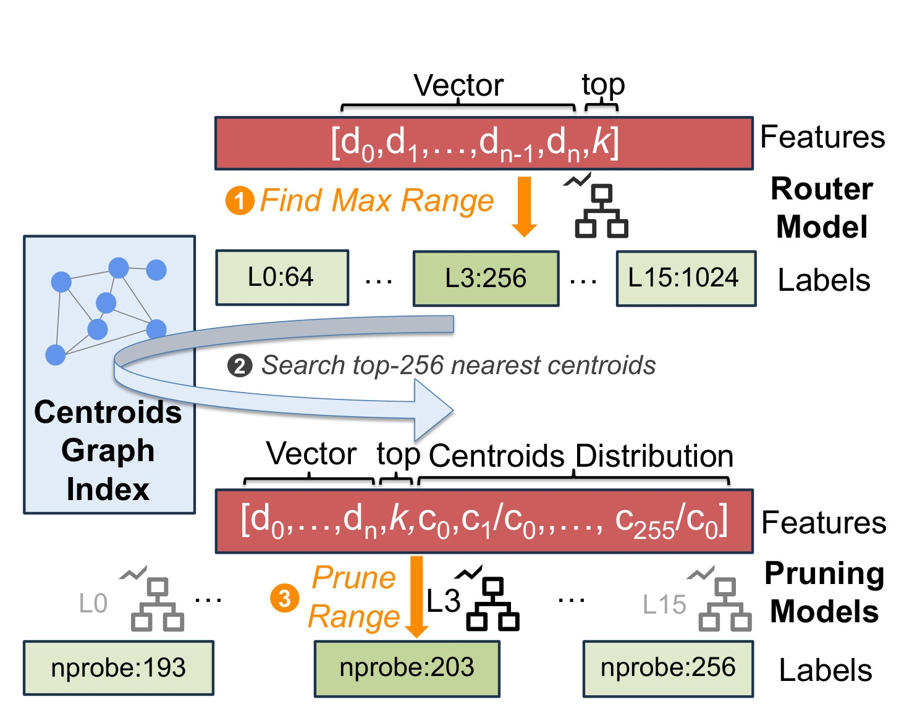
Figure 11 把 LLSP 的在线流程画得很清楚。第一步，router model 输入 query vector 和 top-k，预测一个 coarse maximum search range level，比如 L3:256，意思是本 query 至多需要搜索 256 个 nearest centroids。第二步，centroids graph index 找出 top-256 nearest centroids。第三步，系统构造 pruning features，包括 query、top-k、最近 centroid 距离和后续 centroids 相对最近 centroid 的距离比，例如 \(c_1/c_0,\ldots,c_{255}/c_0\)，并调用 level-specific pruning model，把 nprobe 从 256 细化到 203 或 193 这类更小值。重要的是，这些 features 都是 pre-search information；LLSP 不需要先加载一批 cluster 再判断，因此仍然可以一次性批量读最终保留的 cluster lists。
论文没有把 LLSP 写成 loss 公式，但训练标签可以按原文描述整理成两个目标。router 的标签是“满足目标 recall 的最小 range level”：
符号解释：q 是 query；k 是请求 top-k；\(nprobe_\ell\) 是第 \(\ell\) 个 range level 的上界，例如 64、128、192、256 到 1024；\(R_{target}\) 是业务要求的目标 recall，例如 90%；\(\ell^*(q,k)\) 是这个 query/top-k 对应的最小可用 level。论文训练 router 时从最近时间窗口采样日志，对每个 query 和业务 top-k 找到最小满足 recall 的 level，再用 \((q,k)\) 作为 features、level 作为 label 训练 GBDT。
每个 level 内的 pruning model 标签则是“在该 level 最大 nprobe 内还能降到多小”：
符号解释：\(n^*(q,k,\ell)\) 是在 router 选择的 level \(\ell\) 内，为当前 query 和 top-k 保持目标 recall 所需的最小 cluster 数；n 是候选 nprobe；\(Recall(q,k,n)\) 是用 n 个 cluster 做搜索得到的 recall；其他符号同上。论文的离线训练做法是先用 large nprobe，例如 4096，跑 non-pruning search 近似 ground truth，避免 brute-force 全量精确搜索；然后在每个 level 中逐步减少 nprobe，直到 recall 低于阈值，最后一个满足阈值的 nprobe 就是标签。features 包括 query、top-k 和 centroid-distance distribution。
这套 LLSP 的关键不是 GBDT 模型本身多新，而是它对系统路径的约束很强。模型推理要足够快，论文说 GBDT 训练可在百万 entries 上分钟级完成，在线预测约 10-30 us，模型内存只有 hundreds of KB。features 也必须在线可得，不能要求加载 cluster list 后才知道；否则 savings 会被串行 I/O 抵消。router 和 pruning 分层的原因也很实际：如果直接让一个模型在 64 到 4096 的宽范围里预测精确 nprobe，标签分布会很复杂；先用 router 缩小 max range，再在 level 内细调，既能适配 top-k，又能把模型分成多个更稳定的局部任务。
从推荐系统的视角看，LLSP 类似一个 query-aware candidate-budget allocator。不同 query 的“召回难度”并不一样：有些 query 附近 cluster 密集，较少 nprobe 就能覆盖目标 top-k；有些 query 位于边界，必须多读。固定 \(\epsilon\) 相当于给所有 query 同一个预算规则；LLSP 则把预算分给难 query，把简单 query 的冗余扫描省掉。它在业务上也很有意义：推荐和广告常有更高 QPS、更强 post-filtering 和更大 top-k，少读几十或几百个 cluster 会直接转化为 SSD 带宽、CPU 距离计算和 tail latency 的余量。
LLSP 还有一个隐含优势：它把服务策略从“人工调一个全局 epsilon”改成了“按索引版本训练一个小模型”。在生产环境中，搜索、推荐、广告的 query 分布会随内容生态、节假日、模型版本和业务策略变化。全局 epsilon 往往需要人工灰度调参，调大了浪费资源，调小了损害 recall；而 LLSP 可以把最近窗口的 query 和 top-k 记录转成训练样本，随索引发布同步更新。论文用 1% logged items 采样，是因为短窗口内高达 90% duplication，采样可以降低训练开销，同时保留主要分布。这个做法并不保证所有长尾 query 都被覆盖，但比固定阈值更容易把主流流量的资源预算调到合理区间。
训练标签使用 large nprobe 的 non-pruning search 近似 ground truth 也有工程含义。真正 brute-force 精确搜索在 10B 级数据上代价太高，不适合作为每天构建的一部分；而 large nprobe clustering search 能给出足够强的近似上界，用来判断更小 nprobe 何时达到目标 recall。这样得到的标签不是理论最优，而是“相对当前索引结构和业务 recall target 足够好”的操作标签。对生产系统来说，这种近似标签可以接受，因为最终目标不是证明最小 nprobe 的数学最优性，而是在 SLA、吞吐和召回之间找到稳定点。
router 与 pruning 分层还有助于隔离错误。router 如果预测 level 过小，后续 pruning 再聪明也无法补回未纳入的 centroids；router 如果预测过大，pruning model 还有机会删掉冗余 cluster。因此 router 更应该偏保守，保证 upper bound 覆盖目标 recall；pruning model 再负责在局部范围内提高效率。Table 3 中 top-k 对 router 的重要性高于 pruning，也符合这个职责划分：top-k 主要决定大范围搜索预算，而 centroid-distance distribution 更决定 level 内哪些 cluster 可以删。
LLSP 的另一个工程细节是 level 设计本身。论文举例 range levels 可以从 64 到 1024、步长 64。这个离散化相当于把连续 nprobe 预测拆成“先选桶、再桶内回归/分类”。如果桶太粗，router 选出的 upper bound 会有大量浪费，pruning model 负担变重；如果桶太细，router 标签更多、训练和推理复杂度上升，还可能在相邻 level 之间产生不稳定切换。RedNote 选择这种多 level GBDT 结构，是在模型大小、预测延迟、训练样本量和在线稳定性之间取折中。它也让系统更容易做 guardrail：可以给不同业务设置最小/最大 level，或在灰度期间把 router 输出 clamp 到保守范围，避免新模型直接影响 recall。
离线标签生成中的“从最大 nprobe 逐步减小直到 recall drops to threshold”还暗含一个单调假设：一般来说，nprobe 越大，候选覆盖越多，recall 不应下降。但真实系统里因为浮点、排序、重复向量、过滤和 tie-break，局部可能存在非严格单调。生产实现如果要复刻论文，最好不要只取单次搜索结果，而要对近邻质量、过滤后候选数和重复向量处理做稳定化。尤其推荐/广告常有 post-filtering，ANNS 的 top-k 只是进入后续过滤的候选池；如果训练标签只看未过滤 recall，可能低估业务真实需要的 nprobe。论文没有展开这个问题，但它在 Figure 1 中已经指出推荐和广告 top-k 大的一部分原因正是过滤。
2.4 GPU 加速与弹性构建
在线服务能跑还不够，RedNote 的 embedding 模型和向量数据持续更新，推荐和广告甚至可能分钟到小时级刷新，search 也希望每日重建全量索引。SPANN 的构建流程主要有三步：hierarchical k-means 把向量划分到 size-bounded clusters；closure multi-cluster assignment 把边界向量冗余复制并用 RNG 规则控制副本；最后为所有 clusters 的 centroids 建 in-DRAM graph，用于在线定位 nearest clusters。论文指出第一步 clustering 占现有构建开销的 60-80%，因为大规模高维向量反复计算距离，单 CPU 节点很难支撑；当数据从 million 到 billion 扩大时，CPU-only SPANN 构建会从几小时变成几天。
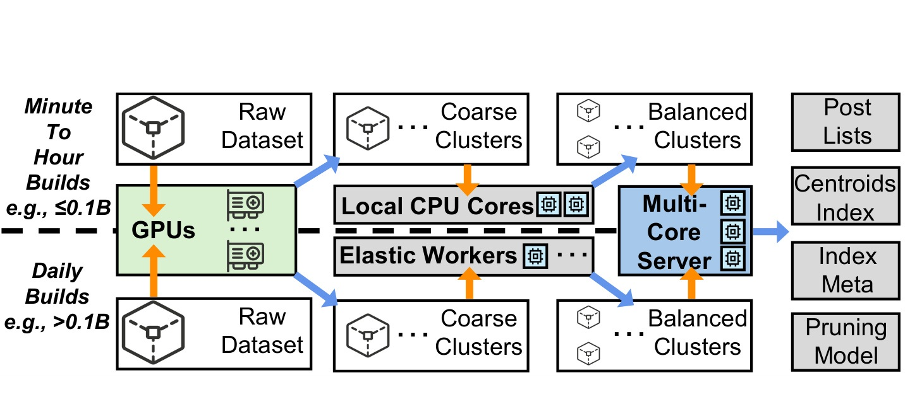
Figure 12 给出 Helmsman 的构建流水线。第一阶段，多 GPU servers 对 raw dataset 做 coarse clustering，生成 coarse centroids。论文没有直接用 GPU 把 cluster 切到最终大小，因为小规模任务中 host-device transfer 反而会压过 GPU 计算收益；所以 GPU 更适合处理 multi-million 以上规模的粗聚类。第二阶段，根据业务规模选择 local CPU cores 或 elastic CPU workers 做 balanced clusters 和 boundary padding。对于 recommendation/advertising 中小规模、要求 minute-to-hour 构建的索引，local CPU cores 可以避免网络传输和调度开销；对于 search 的 10B 级日构建，系统利用线上 CPU clusters 夜间低峰的 idle resources 做 fine-grained balancing。第三阶段，多核服务器合并 shards，生成 posting lists、centroids index、metadata，并训练 pruning model，最后发布 final index。
这里的“弹性”不是无条件抢占线上资源。论文明确说在线流量优先，如果 online 和 offline jobs 争用资源，index-building task 会被 preempted and terminated，之后重试。为了避免少数不稳定节点拖尾，系统还引入 task re-assignment 和 node eviction：任务超过 retry threshold 后换节点，原节点暂时从 resource pool 移除。这个策略体现了工业构建流水线的现实约束：离线构建确实可以利用夜间低峰资源，但不能把推荐/搜索在线 SLA 作为代价；调度层必须承认线上负载会波动，离线任务要可中断、可重试、可拆分。
把构建流水线和在线服务放在同一个系统里看，Helmsman 的索引发布单位包含 cluster lists、centroid graph、metadata 和 pruning model。也就是说，LLSP 模型不是外部附属模块，而是构建产物的一部分；构建时用最近日志采样训练，发布时和索引一起进入 serving nodes。这对推荐/广告尤其重要，因为 embedding 分布、用户行为和 top-k 需求会随时间变；如果 pruning model 不随索引刷新，query difficulty 的分布漂移可能导致 recall 或吞吐退化。论文没有展开模型漂移监控，但从“recent time window”采样策略可以看出，Helmsman 把 pruning model 当作索引版本的一部分管理。
2.5 在线服务路径中的资源权衡
Helmsman 的在线路径可以按资源拆成四段：DRAM 中的 centroid graph 和模型推理、NVMe 上的 cluster-list reads、CPU 或 thread pool 的距离计算、最终 top-k ranking。它的目标不是完全消灭 DRAM，而是把 DRAM 从“保存所有图邻居和向量”改成“保存小型导航结构和元数据”。论文在 10B 级场景中说，生产 HNSW 需要 10 shards、总计约 2.5 TB DRAM 和 320 CPU cores；Helmsman 用单台 96-core all-flash machine 和 160-330 GB DRAM 就能达到同 SLA 下约 47-85% 的吞吐。这个数字说明 Helmsman 并不是追求绝对吞吐超过 HNSW，而是在可接受吞吐和 SLA 内，用少一个数量级的 DRAM 换来接近的服务能力。
这套权衡也解释了为什么论文标题说“The Clustering Strikes Back”。过去 graph-based ANNS 在内存里通常优于 clustering-based 方法，因为它访问少、精度高、延迟好；但一旦工作负载变成 PB 级内存成本、大 top-k、高频重建和多 SSD 阵列，clustering-based 的缺点可以被硬件趋势和系统优化反转。Helmsman 不是证明所有场景都应放弃 HNSW，而是指出 RedNote 这类大规模在线召回有一块特定区域：DRAM 容量成本是主要痛点，SSD 带宽足够高，top-k 大到图式 SSD 访问链变长，索引重建频率高到 CPU-only 构建不可接受。只有这些条件同时成立，Helmsman 的 all-flash clustering route 才有强动机。
更细地说，聚类式搜索把 ANN 问题分成两个阶段：先在 centroid 层做近似导航，再在被选中的 cluster posting lists 上做精确距离计算和排序。第一阶段需要的 DRAM 主要是 centroids、centroid graph 和少量模型；第二阶段需要的容量在 SSD 上，读出的向量再进入 CPU 计算。这个分解对 RedNote 有利，因为它把“必须常驻内存”的对象从全部原始向量和邻接表，缩小到一个比原始数据小得多的导航层。论文在实验设置中把 Helmsman/SPANN 的 replication factor 降到 4，centroids 占总 scale 的 8%，DRAM:SSD ratio 设成 1:20，目的就是让单节点 all-flash server 的 DRAM 容量足够承载导航层，而大部分 vector payload 留在 SSD。
但是这种分解也把系统推到另一个危险区：如果 nprobe 估计偏大，SSD 会读出大量无用 posting lists；如果 cluster balance 做不好，少数 cluster 过大就会造成 tail latency；如果 boundary vectors 复制不足，recall 会下降；如果 raw block layout 没有和 cluster size 对齐，单个 cluster read 会拆成多个 I/O。Helmsman 的三个模块正好对齐这些风险。userspace storage stack 解决“读得够快且不被内核层拖住”；LLSP 解决“读多少才够”；GPU/elastic building 解决“如何快速生成均衡 cluster、boundary padding 和对应模型”。因此方法章不能只看某一个模块，三者共同构成了“聚类式 ANNS 能回到在线主链路”的条件。
方法章最后还要保留一个边界：论文没有把 Helmsman 表述为精确最近邻或全功能动态更新系统。它采用周期性 rebuild、auxiliary in-memory index 维护 recent insertions、tombstone bitmap 处理 deletions 的 hybrid design。查询时要同时 search main SSD-resident index 和 auxiliary index，merge candidates 并过滤 tombstoned vectors。这说明 Helmsman 的核心路径更适合“主索引周期重建 + 新增/删除旁路处理”的生产形态，而不是每条向量实时原地更新。对推荐系统来说，这个边界很关键：如果某个业务需要极高频、强一致的 vector updates，Helmsman 可能还要和实时小索引、增量合并或 log-structured 机制配套。
把这些细节合起来，Helmsman 的方法可以总结为一种“索引版本驱动的 serving contract”。构建阶段保证 cluster 是均衡、固定大小、可按 raw block 寻址的；训练阶段保证每个索引版本有和近期流量匹配的 router/pruning models；发布阶段保证 metadata、centroid graph、cluster lists 和模型一起切换；服务阶段保证 query 在发起 SSD I/O 前已经拥有完整的 cluster id 列表。这个 contract 一旦成立，在线路径就不需要临时探索、回退或多轮判断，才能保持 batched and dependency-free I/O。反过来说，如果某个业务无法满足这个 contract，例如向量实时插入比例过高、cluster 热点极端集中、query 分布突然漂移、或者过滤后候选要求远高于训练标签口径，那么 Helmsman 就需要额外旁路机制，否则节省 DRAM 的收益会被 recall 风险和运维复杂度吃掉。
这也是我认为论文最值得借鉴的工程思想：它没有把 ANNS 看成单个 search algorithm，而是把“构建、发布、存储、剪枝、查询、成本”视为一个闭环。HNSW 的优势在于内存图结构把大部分复杂度藏在 DRAM 访问里；Helmsman 则把复杂度显式拆出来，用构建流水线和存储协议换取更低 DRAM 依赖。这样的系统更难实现，但一旦平台的内存成本成为主瓶颈，它给出的可调旋钮更多：可以调 cluster size、replication、nprobe level、SSD 布局、副本、GPU 构建规模和弹性 CPU 池，而不是只能继续加内存 shard。
最后，Helmsman 的方法还有一个可迁移的组织原则：把业务 SLA 转成每个阶段的资源预算。router/pruning 约束 SSD 读放大，storage stack 约束 I/O 提交开销，构建流水线约束索引新鲜度，部署阶段再用热点副本和内存带宽监控修正真实流量偏差。这个分层预算比单纯调 HNSW 参数更复杂，却更适合多业务共享基础设施。尤其在推荐、搜索和广告共用机器池时，预算边界能帮助定位瓶颈到底来自模型预测、SSD 队列、内存带宽还是构建发布。
从版本发布角度看，Helmsman 的构建产物必须保持强一致：cluster lists 写入 SSD raw blocks 后，metadata 中的 cluster 到 physical location 映射、centroid graph、LLSP model 和 checksum/版本号必须一起发布。否则 online serving 可能用新模型访问旧 cluster layout，或用旧 model 预测不适合新 embedding distribution 的 nprobe。论文没有详细说明发布协议，但 Figure 8 中 global distributed file system、release final index 和 metadata/index data 的分离说明它至少把构建与 serving 做成版本化交付。实际落地时，常见做法会是先构建新版本、校验 cluster count/size/recall、预热元数据，再原子切换在线引用；失败时回滚到上一版。这个过程对推荐业务尤其重要，因为一天内可能有大量小索引重建，任何一次发布不一致都会表现为局部召回异常，而不是立刻全局宕机。
还有一个容易忽略的部分是 cluster hotspots。论文第 6 节提到，少数推荐索引在试运行早期出现“加 CPU cores 但吞吐不上升”的现象，原因是 query bursts 访问相同 nearest clusters 和 logical blocks，导致 SSD die-level conflicts。这个问题不是 Figure 10 的 raw block layout 能完全消除的，因为热点来自流量分布本身。作者用少量 cluster-list redundant copies 缓解，把吞吐上限提高 1.5-2x。这说明 Helmsman 需要在构建或发布阶段识别热点 cluster，并在 SSD 上做副本/布局分散；否则学习式 pruning 越精准，越可能让大量 query 集中读同一批高频 cluster，形成新的局部瓶颈。
构建流水线还承担另一个功能：让不同业务用不同 freshness 策略共享同一系统。推荐和广告的向量规模相对较小，但更新更频繁，适合 local CPU cores 快速完成 fine splitting 和 padding；search 的规模极大，但重建周期更接近 daily，适合在夜间低峰借用 elastic CPU workers。Helmsman 没有强迫所有业务使用同一种构建模式，而是把 coarse clustering、fine balance/padding、merge/release 拆成可以调度的阶段。这样一来，系统可以把 GPU 用在最重的粗聚类，把在线集群的空闲 CPU 用在可重试的细粒度阶段，把最终 merge 放到多核服务器上做确定性发布。
在索引质量方面，boundary padding 和 redundant copies 也不能忽略。聚类式 ANNS 的 recall 很大程度取决于 query 落在 cluster 边界时，真实近邻是否被复制到相邻 cluster。复制太少会损 recall，复制太多会放大 SSD 空间、I/O 和构建时间。论文没有给出完整复制公式，但它说明沿用 SPANN/RNG rules 控制 boundary vectors，并在构建阶段生成 size-bounded、balanced posting lists。这意味着 Helmsman 的“all-flash”并不是简单把原始向量顺序写盘，而是仍然需要精细的聚类、均衡、复制和 centroid graph 构建；否则在线 storage stack 再快，也只是更快地读出低质量候选。
3. 实验结果
实验设置覆盖公共 SIFT 和五个生产数据集。Table 2 中列出的数据包括 SIFT 0.1B/10B、RedSrch 0.5B/10B、RedRec 0.1B、RedAds 20M、RedCM 0.1B、RedRAG 4M；维度从 64、128 到 1024；top-k 范围从 RAG 的 10-100 到 search/ads 的 100-3000。相似度使用 L2。DRAM-SSD 测试平台是 96-core AMD EPYC 9654、12x96 GB DDR5、12x1.92 TB PCIe-5.0 NVMe SSD；in-DRAM HNSW 使用生产标准 32-core CPU、256 GB DDR5 shards。baseline 包括 DiskANN、Starling、PipeANN、SPANN 和 HNSW。这个设置基本覆盖了论文想证明的三个问题：公开数据上是否比 DRAM-SSD baselines 更好，生产负载下能否接近 HNSW，成本效率是否足以支撑迁移。
从评测口径看，作者没有只用 SIFT 证明算法趋势，而是把 RedSrch、RedRec、RedAds、RedCM、RedRAG 放进同一套实验。这样做的价值是暴露维度和 top-k 的交互：RedSrch/RedRec 多是 64 维，top-k 大；RedAds 是 128 维且 top-k 也大；RedRAG 是 1024 维但 top-k 小。对于 graph-based SSD 系统，top-k 大会放大遍历深度；对于 Helmsman，维度高会增加距离计算和内存带宽压力。因此 Figure 14 到 Figure 18 其实在分别测试两种瓶颈：大 top-k 下的 I/O/latency，以及高维向量下的带宽和计算耦合。Helmsman 在 RedRAG 上从 Gen4 到 Gen5 提升更明显，说明当向量维度高、单次 cluster list 数据量大时，I/O stack 的带宽可扩展性更容易转成吞吐收益。
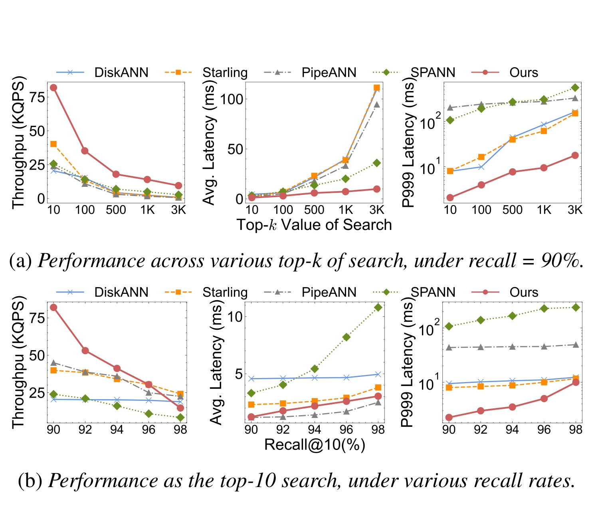
Figure 14 是公开 SIFT100M 的端到端主结果。上半部分固定 recall=90%，横轴 top-k 从 10 到 3000，比较 throughput、average latency 和 P99.9 latency。Helmsman 在所有 top-k 下保持最高吞吐，随着 top-k 增大，吞吐下降比 graph-based baselines 更慢，平均延迟保持在 10 ms 内，P99.9 也明显低于 20 ms。DiskANN、Starling、PipeANN 在大 top-k 下受候选队列和 search hops 增长影响，SSD pages 访问增多，延迟恶化。下半部分固定 top-10，横轴 recall target 提高，Helmsman 在 90%-96% 区间保持竞争力，高 recall 下仍有优势。这个图证明 Helmsman 的优势不是只在一个固定参数点成立，而是在 top-k 和 recall 双维变化下都比较稳定。
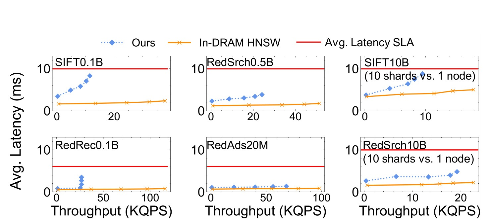
Figure 17 直接回答“all-flash 能否替代生产 HNSW”的问题。对于 20M 到 0.5B、同一 96-core node 能放下 HNSW 的数据集，Helmsman 在 90% recall 下达到 in-DRAM HNSW 约 25-70% 的吞吐，同时满足 average latency SLA。对于 SIFT10B 和 RedSrch10B，生产 HNSW 是 10 shards、约 2.5 TB DRAM、320 CPU cores；Helmsman 用单台 96-core 机器和 160-330 GB DRAM，达到约 47-85% 的吞吐。这里要注意作者没有声称 Helmsman 全面打赢 HNSW：它的延迟会略高，绝对吞吐也不总是超过内存图。但在成本口径下，少 3-4 倍 CPU、近一个数量级 DRAM 的替换价值很大。对平台工程来说，这类结果比单纯“吞吐第一”更重要，因为线上预算常常受 DRAM 容量和机器数量约束。
不过，Figure 17 也给出了一个务实边界：如果某个小规模索引可以轻松放进同一台 96-core 机器的 DRAM，HNSW 的绝对低延迟和吞吐仍然有吸引力。Helmsman 的优势随规模增大而增强，尤其在 10B 级需要多 shard HNSW 时，单机 all-flash 的成本和运维复杂度优势才充分体现。因此部署时不应机械替换所有 HNSW，而应按索引规模、top-k、更新频率和成本压力分层迁移。论文第 6 节说 RedNote 正在逐步把 all-flash servers 作为 unified ANN layer 推开，也符合这种灰度路径：先接最适合的高成本索引，再根据线上 hotspot、内存带宽和动态更新表现扩大覆盖。
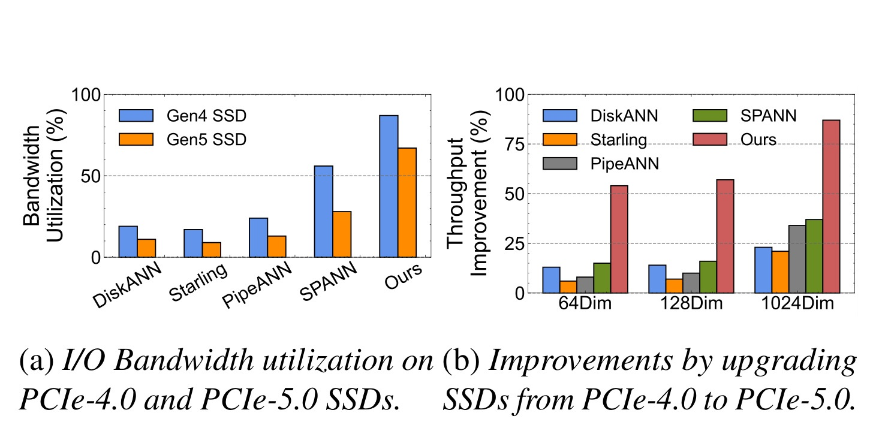
Figure 18 检验 userspace storage stack 是否真正吃到硬件带宽。Figure 18a 在 RedSrch0.5B 上比较 PCIe 4.0 和 5.0 SSD 阵列的带宽利用率：graph-based systems 通常低于 20%，SPANN 在 Gen4 上约 55%，Helmsman 则达到 Gen4 约 85%、Gen5 约 70%。Figure 18b 比较从 Gen4 升级到 Gen5 的 throughput improvement：DiskANN、Starling、PipeANN 只有 10-30%，SPANN 最高约 40%，Helmsman 在 64/128 维数据上约 55%，在 1024 维 RedRAG 上约 87%。这说明 Helmsman 的瓶颈更接近硬件可提供的带宽，而不是被软件栈或串行访问锁住。换句话说，Table 1 里的 Gen5 SSD 带宽只有在 Figure 18 这样的系统路径中才会变成真实服务吞吐。
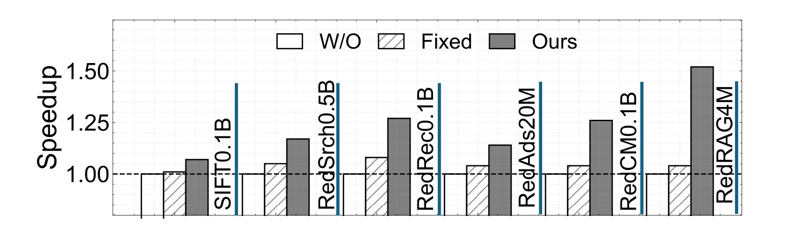
Figure 19 展示 LLSP 的吞吐收益。相比不剪枝，LLSP 在 SIFT0.1B、RedSrch0.5B、RedRec0.1B、RedAds20M、RedCM0.1B、RedRAG4M 等数据集上带来约 1.1-1.6x throughput speedup；相比 fixed pruning policy，也仍有 5-25% 更高吞吐。收益最大的场景通常是 query difficulty 差异大、top-k 范围宽、固定规则容易过扫的服务。这个结果支持方法章的判断：nprobe 不是一个全局常数可以轻易设好，按 query/top-k 和 centroid-distance distribution 预测扫描范围，能把 SSD 读和 CPU 距离计算从冗余 cluster 上收回来。
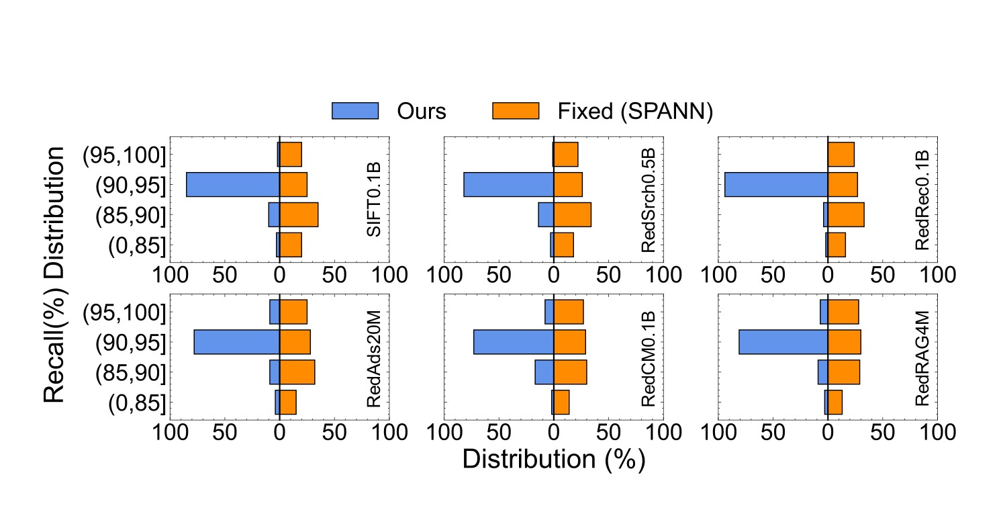
Figure 20 说明 LLSP 没有简单用少扫 cluster 换吞吐。图中按六个数据集展示 query-level recall distribution，Helmsman 的 ours 分布相对 fixed SPANN 更集中在目标 recall 以上。论文文字说，在同一平均 recall 下，fixed policy 有超过 40% queries 不能达到目标 recall，而 LLSP 能保证超过 80% queries 达到 90% 目标 recall。这个指标比平均 recall 更接近生产风险，因为召回层最怕少数 query 低 recall 导致候选缺失，后续排序没有补救空间。LLSP 的价值因此有两层：减少简单 query 的过扫，提高吞吐；同时识别困难 query 给足 nprobe，减少低 recall outliers。
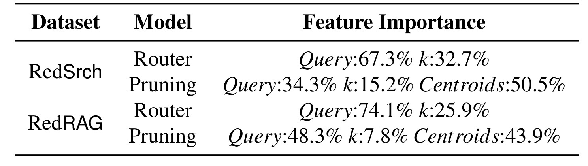
Table 3 进一步解释 LLSP 学到的信号。RedSrch 的 router 中 query 特征占 67.3%、top-k 占 32.7%；pruning 中 query 占 34.3%、top-k 占 15.2%、centroids 占 50.5%。RedRAG 中 router 的 query 占 74.1%、top-k 占 25.9%；pruning 中 query 占 48.3%、top-k 占 7.8%、centroids 占 43.9%。这和方法设计一致：router 需要先看 query 和 top-k 决定大范围，pruning 则更依赖 nearest centroids 的距离分布，因为进入某个 level 后，真正决定能删多少 cluster 的是局部几何结构。这个表也说明 LLSP 不是只记住业务 top-k；query geometry 和 centroid distribution 才是判断扫描范围的主要信息。
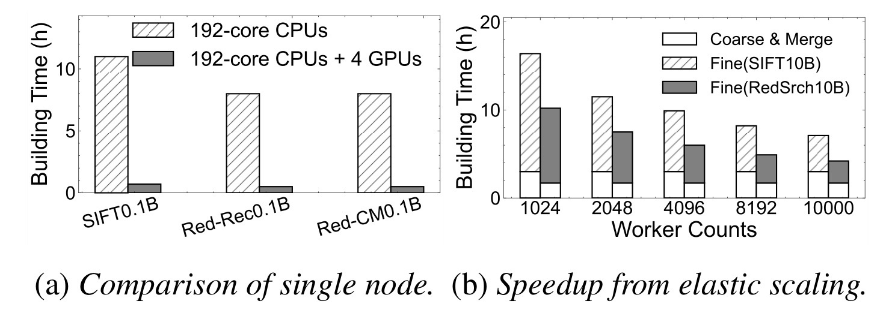
Figure 21 对应离线构建。左图显示在单 192-core node 上，CPU-only 构建 0.1B 级索引需要约 9-12 小时；加入 4 块 NVIDIA L20 GPU 后，总构建时间降到 1 小时以内，最高约 10x speedup。右图看 10B 级数据，coarse clustering 和 merge 之外，fine-grained balancing 可以通过 elastic CPU workers 扩展；worker cores 从 1024 增加到 10000 时，端到端构建从超过 16 小时降到约 4-7 小时。这个图对推荐/广告很关键，因为它证明 Helmsman 的低成本 serving 不会被“索引建不出来”抵消。大规模向量系统的可用性不只取决于查询性能，还取决于模型更新后多久能发布新索引。
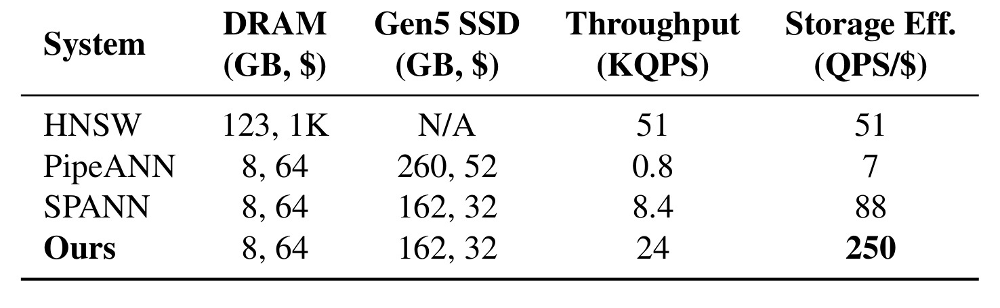
Table 4 在 RedSrch0.5B 上比较 storage efficiency。HNSW 使用 123 GB DRAM，成本约 1K 美元，吞吐 51 KQPS，得到 51 QPS/$；PipeANN 用 8 GB DRAM 和 260 GB Gen5 SSD，吞吐只有 0.8 KQPS，QPS/$ 为 7；SPANN 用 8 GB DRAM 和 162 GB SSD，吞吐 8.4 KQPS，QPS/$ 为 88；Helmsman 在同样 8 GB DRAM 和 162 GB SSD 口径下吞吐 24 KQPS，QPS/$ 达到 250。这个表把系统收益转成采购口径：Helmsman 相比 HNSW 是 5.4x QPS/$，相比 SPANN 是 2.9x。它也提醒我们，SSD 方案如果吞吐太低，便宜硬件并不自动代表高成本效率；PipeANN 的 QPS/$ 甚至低于 HNSW。
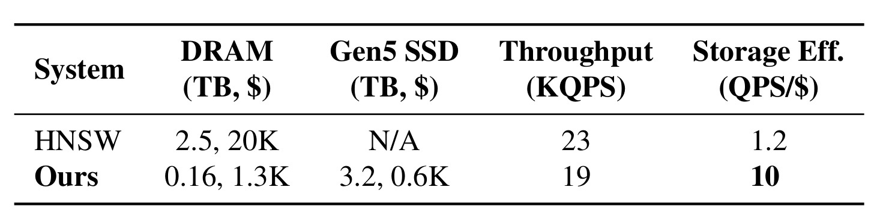
Table 5 是更能代表搜索主战场的 10B 规模。HNSW 需要 2.5 TB DRAM，成本约 20K 美元，吞吐 23 KQPS，storage efficiency 只有 1.2 QPS/$；Helmsman 使用 0.16 TB DRAM 和 3.2 TB Gen5 SSD，DRAM 成本约 1.3K、SSD 成本约 0.6K，吞吐 19 KQPS，QPS/$ 达到 10。吞吐绝对值略低于 HNSW，但成本效率提升 8.3x，DRAM 用量下降约 90%。这正是论文摘要中“saving over 90% hardware costs”和“40 machines replacing workloads that previously required about 35,000 cores and 0.35 PB DRAM”的实验基础。对一个需要容纳十亿到百亿向量的搜索基础设施来说，这种成本曲线变化可能比单点 latency 领先更有战略意义。
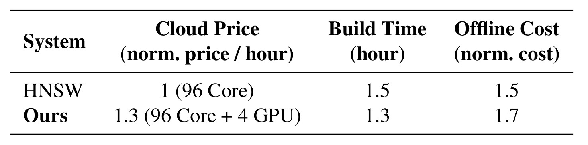
Table 6 补充离线构建成本。HNSW CPU-only 构建在 96-core 口径 normalized cloud price 为 1，build time 1.5 小时，offline cost 1.5；Helmsman 使用 96-core + 4 GPU，price 为 1.3，build time 1.3 小时，offline cost 1.7。也就是说，GPU 加速并没有让构建成本失控，主要因为 GPU 实例更贵但构建时间更短。论文还认为随着 GPU clustering implementation 继续发展，聚类式索引构建成本可能继续下降。这个表的作用是封住一个常见质疑：如果 all-flash serving 省了钱，但每次重建都要昂贵 GPU 和大规模弹性 CPU，整体账可能不成立。至少在 RedSrch0.5B 单节点构建口径下，作者给出的估算显示离线成本与 CPU-only HNSW 接近。
主结果还应结合 tail latency 看。Figure 14 和 Figure 16 共同说明，graph-based DRAM-SSD baseline 一旦接近饱和，P99.9 会快速抬升；SPANN 虽有批量 I/O，但传统 I/O 栈和固定 pruning 仍会让 tail 放大。Helmsman 在 Figure 16 中保持约 10 ms 量级 P99.9，背后的原因不是单一模块，而是三个控制点同时生效：SPDK 降低 per-command 软件抖动，LLSP 减少过量 cluster reads，balanced fixed-size cluster 限制单次读大小。对线上推荐/广告而言，P99.9 比平均延迟更敏感，因为召回层通常在多路并发中取最慢路径或等待必要候选，少数慢 query 会扩大到请求级超时。
成本表也要放在业务吞吐里理解。Table 4 的 RedSrch0.5B 上，Helmsman 24 KQPS 低于 HNSW 的 51 KQPS，但由于存储成本从 123 GB DRAM 降到 8 GB DRAM + 162 GB SSD，QPS/$ 反而高很多。Table 5 的 10B 场景更典型：HNSW 需要 10 shards 才放下索引，Helmsman 单机就能承接接近吞吐。这里的“单机”不只是硬件成本低，也减少了跨 shard 查询、结果 merge、负载均衡和故障域管理复杂度。当然单机 all-flash 也会带来自己的风险，例如 SSD 故障和热点集中，因此生产迁移应看 total service topology，而不是只看单节点 QPS/$。
实验中还有一个值得保留的判断：Helmsman 的收益随业务约束变化而变化。对于 RedCM 这类内容安全任务，SLA 更宽松、top-k 中等，混合 SSD graph 或 SPANN 的压力本来就小；对于 RedRAG，LLM 推理常常是总链路主耗时，ANNS 的 10-100 top-k 不一定是最大成本源。Helmsman 最强的区域仍是 RedSrch、RedRec、RedAds 这类高 QPS、大 top-k、严格 SLA、频繁重建的召回服务。论文把所有服务放到同一评测中，恰好说明统一 ANN layer 需要按业务配置不同参数，而不是用同一个 recall/top-k/nprobe 策略横扫所有索引。
因此评估 Helmsman 不能只看某一张吞吐图。Figure 14 证明公开数据上的基础性能，Figure 17 证明相对 HNSW 的替代边界，Figure 18 证明硬件升级可被利用，Figure 19/20 证明 LLSP 同时兼顾效率和质量，Table 4-6 则把这些性能转成成本口径。证据链完整，结论才成立。若只看某一项，容易误判为普通 SPDK 优化或普通聚类索引调参，而忽略它在生产成本、重建效率和召回稳定性上的联合收益。这也是系统论文比单算法论文更需要多指标交叉验证的原因。
部署结果是论文证据链的最后一环。第 6 节说 Helmsman 已作为 RedNote unified ANN layer 滚动上线，all-flash servers 正在逐步替换 search、recommendation、advertising 和其他 vector services 的 in-DRAM deployments。当前约 40 台 all-flash servers，每台 0.7-1.1 TB DRAM、12 块 NVMe SSD，已经支撑过去需要约 35,000 CPU cores 和 0.35 PB DRAM 的在线负载；离线构建可在低峰期利用最多 10,000 CPU cores。论文还给出两个运维教训：第一，少数 recommendation indexes 中 query bursts 会集中访问相同最近 clusters 和 logical blocks，引发 SSD die-level conflicts，增加冗余 cluster-list copies 可把 throughput ceiling 提高 1.5-2x；第二，12 块 Gen5 SSD 约 140 GB/s external I/O，但实践只能利用约 70%，瓶颈转移到 12-channel DDR5 的有效内存带宽 300-350 GB/s，因为数据要经历 SSD-to-DRAM transfer、DRAM-to-CPU reread 和 nearest-centroid search。这个部署章节让论文更可信，也让边界更清楚：Helmsman 把瓶颈从 DRAM 容量和内核 I/O 栈推向 SSD 内部冲突、内存带宽和动态更新。
4. 总结
4.1 我的判断
Helmsman 最有价值的地方，是它把“聚类式 ANNS 是否过时”这个问题放回了硬件和业务负载的交叉点。过去 HNSW 类 in-memory graph 确实更适合低延迟召回，但 RedNote 的负载有三个变化：向量规模进入百亿到千亿，top-k 在搜索/广告/推荐中可以高达 1000-3000，SSD 阵列带宽已经足够高且便宜。Graph-based SSD 方案在这种区域被串行 I/O 和大候选队列拖住，clustering-based 方案反而能把 I/O 批量化。Helmsman 的贡献不是某个单独算法，而是把 SPDK raw block storage、query-adaptive nprobe、GPU/弹性 CPU 构建和生产部署经验合成了一个可运行的 all-flash ANNS layer。
我对这篇论文的整体评价偏正面，但它的适用边界也比较清晰。它不是一个面向所有向量检索场景的通用结论，而是一个“工业大 top-k 召回 + 高 DRAM 成本 + 高带宽 SSD + 可周期重建索引”的组合解。对内容推荐平台来说，这个组合正在变得常见：多模态 embedding 越来越多，召回路径越来越多，候选过滤让 top-k 越来越大，模型版本更新也越来越频繁。Helmsman 的意义在于证明这类平台可以重新考虑聚类式索引，而不是把 HNSW 当成唯一在线答案。
4.2 工程启发与复现建议
如果要复现或借鉴 Helmsman，我会优先验证三件事。第一，自己的线上 top-k 分布和 query latency budget 是否真的像 RedNote 一样偏大且严格；如果 top-k 很小，graph-based SSD 或内存 HNSW 可能仍更合适。第二，聚类式索引的 cluster size、replication factor、centroid ratio 和 DRAM:SSD ratio 是否能让单次 query 形成足够批量的固定大小读；如果 I/O 太碎或分布太偏，SPDK 也救不了。第三，LLSP 的训练数据必须来自近期日志，并且要监控 query-level recall distribution，而不仅是平均 recall；否则 pruning 很可能在简单 query 上省了资源，却在困难 query 上制造召回黑洞。工程上还要特别关注 memory bandwidth，因为 Helmsman 已经指出 12 块 Gen5 SSD 后瓶颈会转向 DRAM-to-CPU 路径，盲目加 SSD 可能收益很小。
4.3 局限与后续跟进
这篇论文仍有一些局限。第一，许多生产 trace 细节没有完全公开，包括 query 分布、业务并发、索引版本切换和线上异常处理，因此外部复现只能验证系统趋势，难以复现所有 RedNote 指标。第二，LLSP 依赖历史日志近似标签和 non-pruning large nprobe 结果，如果 embedding 模型快速漂移、用户行为分布突变或业务 top-k 策略改变，模型需要重新训练和校准。第三，Helmsman 的动态更新仍是 hybrid design：主 SSD index 周期重建，recent insertions 进 auxiliary in-memory index，deletions 用 tombstone bitmap；这比原地更新简单，但会增加额外内存和 merge/filter 复杂度。第四，userspace raw NVMe stack 会提高运维门槛，设备故障、空间回收、数据校验、升级兼容和多租户隔离都需要系统自己承担更多责任。第五，论文展示了成本效率，但没有完整展开能耗、机房网络、灰度迁移和故障恢复成本，这些都会影响最终 TCO。
后续我会重点跟进三个方向。第一，看 Red-EAD/helmsman proof-of-concept 是否开放了完整 SPDK path、LLSP 训练脚本和数据布局工具，这决定外部团队能否把论文方法落到可测试代码。第二，关注 dynamic update 和 auxiliary index 的比例：如果新增向量长期堆在内存索引里，DRAM 节省会被侵蚀；如果重建太频繁，离线构建和发布成本又会上升。第三，关注 memory bandwidth bottleneck 的缓解，例如 DDIO/SDCI、I/O-to-cache、NUMA-aware placement、distance calculation offload 或更强的 vectorized reranking，因为当 SSD 带宽继续增长，Helmsman 下一阶段的瓶颈已经不在外部存储，而在内存系统和 CPU 计算路径。整体看，这篇论文给推荐和搜索基础设施的启发是：召回系统的“算法选择”不能脱离硬件趋势，HNSW、DiskANN、SPANN、Helmsman 不是线性优劣关系，而是不同访问模式、top-k、更新频率和成本约束下的工程解。Helmsman 在 RedNote 的成功说明，当业务进入大 top-k、高频重建、PB 级 DRAM 压力区间时，clustering-based ANNS 确实可以重新成为主线方案。